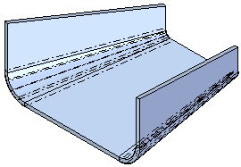
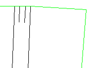

Lofted Flange command
Use the Lofted Flange command to construct a flange by fitting a feature through two open profiles. Certain types of lofted flanges cannot be flattened. Only lofted flanges that consist of planes, partial cylinders, and partial cones can be flattened. Lofted Flanges that contain other types of faces and/or spline faces may not flatten or contain geometry that may be inaccurate when flattened.
The Lofted Flange command is intended for base feature creation but may work as a secondary feature in some cases.

Controlling bends in the flange
The Bending Method tab on the Lofted Flange dialog box defines incremental bends for the bends in the lofted flange. For example, you can specify that five incremental bends are created for each bend on a lofted flange.

You can select the option, Use triangulation to develop each bend to enable other options so you can control the Number of resultant bends, Maximum Chord Tolerance, Maximum Segment Length, and Maximum Segment Angle.
The Bending Method tab also specifies bend index marks when you save the sheet metal file as a flat pattern. These bend index marks are short lines connected to the edge of the part along the bend that help align the metal with the press brake.
Each bend is represented as a bend centerline in the 3D model and is displayed with the edge color and a centerline style. In Draft, these bend lines display as centerlines in the visible edge color. You can apply different centerline styles to bends that bend upward and to bends that bend downward. The centerline style options can be set on the Annotation page of the Options dialog box or the Drawing View Properties dialog box.

This video describes the options available for defining a bend method.
Lofted Flange: Bending methodsVertex mapping in lofted flanges
With vertex mapping you can define sets of map points between the cross sections of a loft or swept feature. The start point for each cross section you select defines a default vertex map set. Use the Vertex Mapping button, on the Lofted Flange command bar to display the Vertex Mapping dialog box. You can use the Add button on the Vertex Mapping dialog box to redefine the start point for a cross section or to define additional vertex mapping sets.
This video explains how to use vertex mapping to improve or eliminate discontinuity within a surface.
Lofted Flange: Vertex Mapping